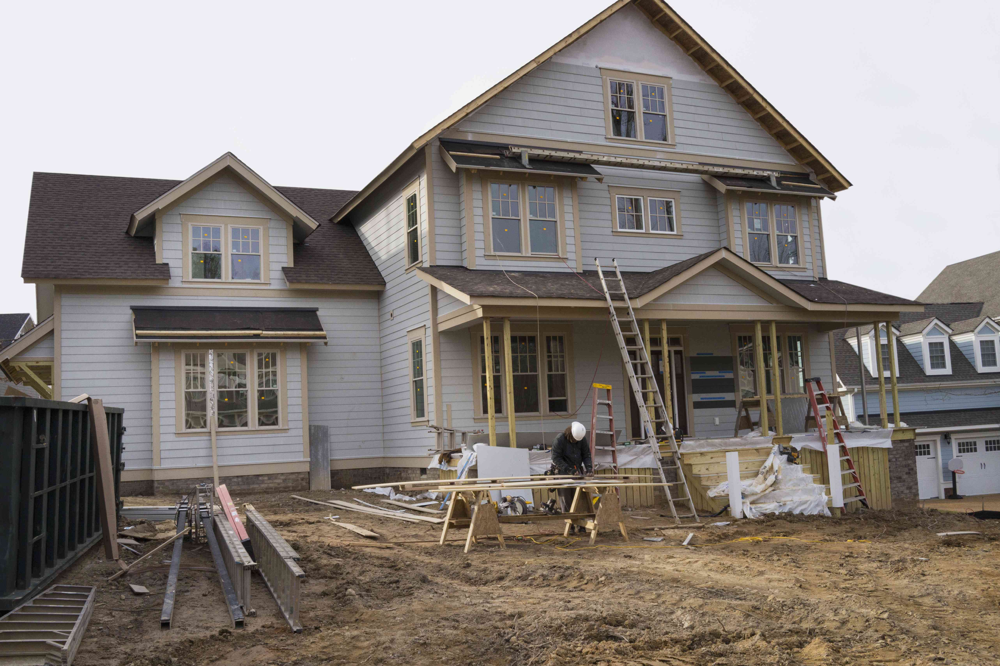
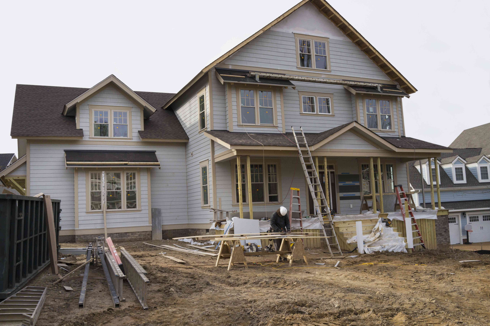

What Are Home Renovations & Additions?
Home renovations involve updating, improving, or modernizing your existing living space, while home additions create new areas like extra rooms, expanded kitchens, or outdoor living spaces. These projects enhance your home’s aesthetics, functionality, and overall value.
Why Are Renovations & Additions Important?
- Modernize outdated spaces for comfort and efficiency
- Increase your home’s market value
- Create additional living space for growing families
- Solve functional issues with better layouts and energy efficiency
Steps for a Successful Renovation or Addition
- Plan and Design: Identify goals and work with a contractor for detailed plans.
- Obtain Permits and Approvals: Ensure the project meets local building codes.
- Prepare Your Home: Clear the area and address structural concerns first.
- Construction & Installation: Professionals handle framing, drywall, flooring, and finishing touches.
- Inspection & Finishing Touches: Check for issues and finalize paint, fixtures, and trim.
Signs Your Home May Need Renovations or Additions
- Outdated design or functionality issues
- Growing family or changing lifestyle needs
- Visible wear and tear, like cracks or damaged cabinetry
- Poor space utilization or lack of storage
Note: Regular updates and thoughtful additions help your home stay safe, functional, and visually appealing for years to come.
 

.jpg)